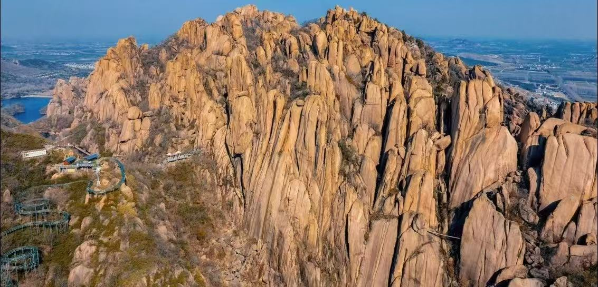
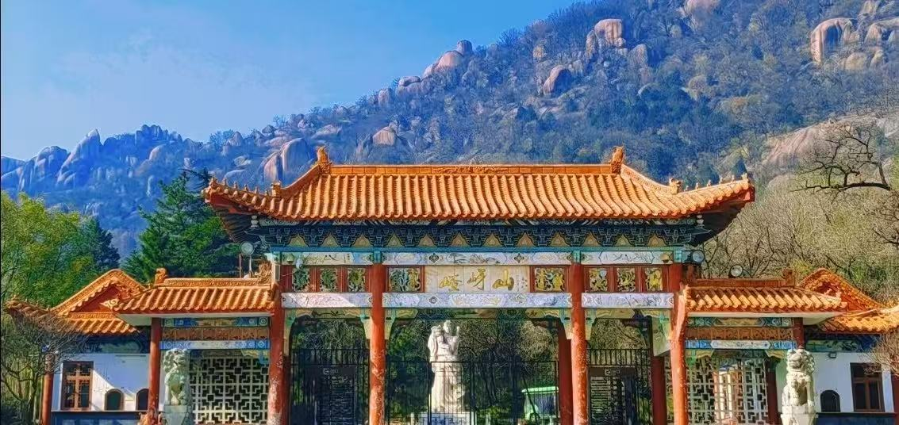

嵖岈山位于河南省驻马店市遂平县，是国家5A级旅游景区、国家地质公园、国家级森林公园，地处伏牛山东麓低山丘陵地带。景区由花岗岩峰林、奇石峡谷、湖泊森林组成，素有“中原盆景”“江北石林”之美誉。
作为《西游记》原著灵感发源地及电视剧续集主要取景地，景区充满神话色彩与西游文化氛围。主要分为南山、北山、六峰山、天磨湖、琵琶湖五大片区，集地质观光、文化体验、亲子游乐、休闲度假于一体，是豫南必游名山。

📍 地址：河南省驻马店市遂平县嵖岈山风景区
🎫 门票：成人票65元；学生凭证半价；60岁以上老人、1.4米以下儿童、现役军人、残疾人等凭证免门票
⏰ 开放时间
旺季（4月—10月）07:30-17:30；淡季（11月—3月）08:00-17:00，全年开放
🚗 交通指南
🍜 当地特色美食
经典一日游：南门→秀蜜湖→黑风洞→石猴院→一线天→飞来石→凤凰台→天磨湖→返程。
轻松休闲线：南门→观光车→天磨湖→魔毯上山→石猴院→滑道下山→返程。
1. 景区部分路段陡峭，建议穿着舒适防滑鞋，注意脚下安全。
2. 一线天通道狭窄，侧身通过，建议脱外套或取下大背包。
3. 夏季防晒、春秋保暖，山区温差较大，出行需备外套。
4. 奇石与遗迹禁止攀爬、刻画，文明参观保护地质景观。
5. 体力一般可乘坐观光车、魔毯等代步设施，提升舒适度。
6. 节假日客流较大，建议提前预约购票，错峰出行。
春季山花烂漫，绿树奇石相映，踏青观光最佳；夏季山林清凉，湖水碧绿，避暑玩水舒适；秋季秋高气爽，层林尽染，登山观景视野极佳；冬季静谧清幽，冰挂奇石独具特色，适合安静研学。